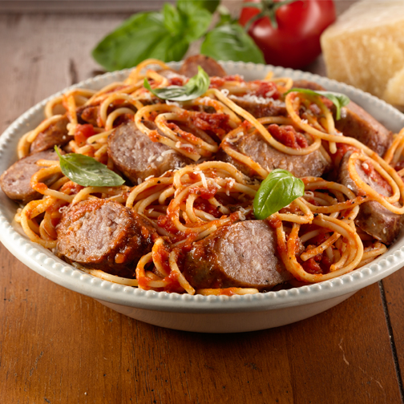

Spicy Spaghetti

Description
Spaghetti with Italian Sausage and a little bit of spice to it!
Ingredients
- 2 28oz cans of peeled San Marzano tomatoes
- 1 pound of spaghetti noodles
- 1 8oz can of tomato paste
- 1 large yellow onion
- 1 bulb of garlic
- 5 Italian sausages
- 3 Tbsp oregano
- 3 Tbsp red pepper flakes
- 4 Tbsp butter
- 3 Tbsp olive oil
Steps
- In a large pot, heat olive oil on medium heat until shimmering, approximately 5 minutes
- While oil is heating up, dice the onion and mince the garlic
- Once oil is shimmering, add sausage to the pot and cook for 5 minutes, then flip and cook for 5 minutes on the other side. The sausage will not be fully cooked at this point, but that is ok, we will finish in later steps
- Remove sausage from pot, put in on a plate in the refrigerator to stop cooking
- Add minced garlic and constantly stir until fragrant, approximately one minute
- Add diced onion and stir occasionally until onion starts to turn translucent, approximately 5 minutes
- Add tomato paste, oregano, and red pepper flakes, stir to incorporate and cook an additional 5 minutes
- Empty the cans of San Marzano tomatoes into a bowl and crush them with your hands until they are small tomato chunks, then add the bowl of tomatoes to the pot with the other ingredients
- Take the sausages out of the fridge and chop them into bit size chunks. Add the chopped sausage and any of their juices to the sauce, stirring everything to incorporate
- Reduce heat until the sauce is just simmering. Cook for 1 to 2 hours
- Once the sauce has been cooking for at least 1 hour, boil some water in a separate pot and add the spaghetti, cooking til al dente, approximately 8 minutes
- Drain spaghetti and add noodles and butter to the sauce, stirring everything together
- Remove from heat and let sit for a few minutes to cool
- Serve spaghetti with parmesan cheese and garlic bread, enjoy!